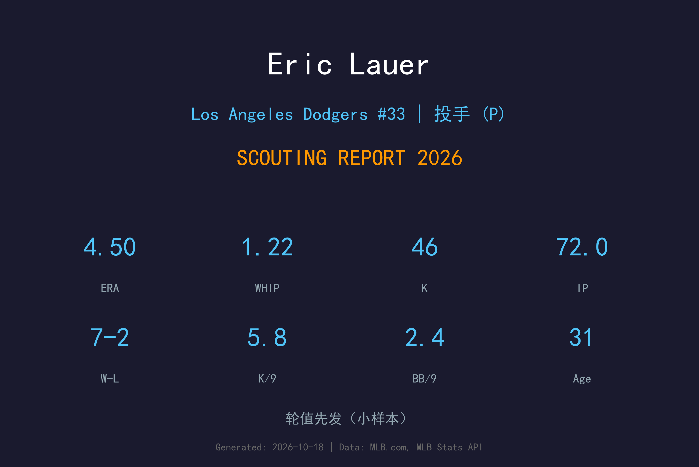
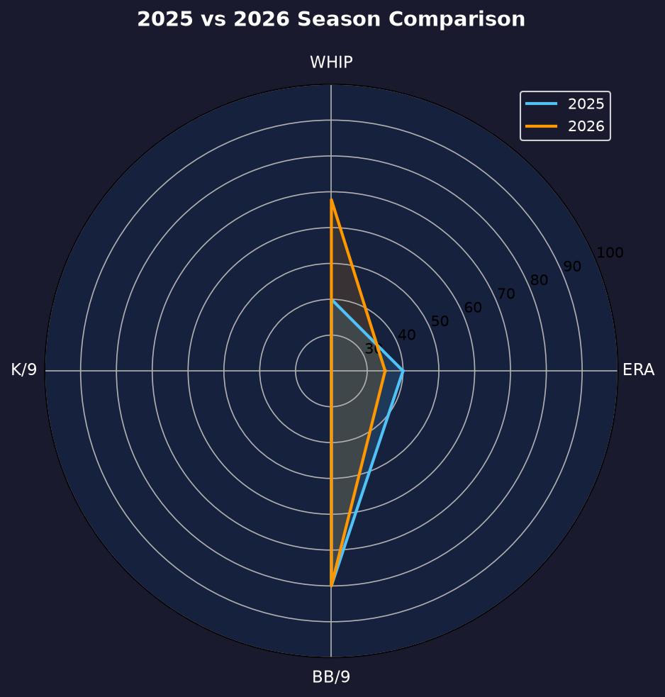
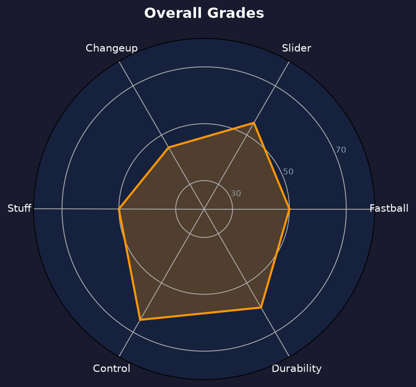

Los Angeles Dodgers | 先发投手 | 左投 / 左打 | 季中交易老将

Eric Lauer 是2025年蓝鸟队惊喜年的缔造者之一，2026年5月17日被交易至道奇补充轮值深度。他的道奇之旅短暂而高效——14场先发拿下7胜2败，但4.50 ERA 与被轰15支全垒打的隐忧，最终在赛季末的伤病中戛然而止。
Lauer 的价值从来不在耀眼的数据，而在于"能把球投进好球带、让守备发挥作用"的朴实效率。72局仅19次保送（2.38 BB/9）的控球是他立足的根本，5.75 K/9 的低三振率则限制了他在强打线面前的上限。
31岁的 Lauer 在赛季末进入 60 天伤病名单。2027年他将以老将 depth 的身份争取轮值第六人的位置——这支道奇需要他这种随时能吃下局数的保险型投手。
三年 23胜10败、1.86 ERA、292K；大三 0.62 ERA 全国最佳，当选 Collegiate Baseball National Player of the Year，2024年入选校体育名人堂。
在多伦多投出生涯最佳赛季之一，常规赛表现出色，更在世界大赛留下经典救援。
季中交易驰援轮值，14场先发 7-2、4.50 ERA，为伤病不断的轮值吃下宝贵的 72 局。
注：数据为5月17日交易加盟道奇后的14场出赛（12场先发）；此前赛季效力于多伦多蓝鸟。

Lauer 2025年效力多伦多蓝鸟（生涯高峰年，含世界大赛经典救援），2026年5月17日交易至道奇，背号沿用。本页图表由脚本根据最终数据自动生成。
.778 的胜率（7-2）在轮值中仅次于 Skubal，但这 7 胜背后是两种截然不同的投球：一种是控球精准、滚地球连发的高效局，另一种是被轰炮后苦苦追分的 ERA 膨胀局。1.88 HR/9 是他生涯最差的全垒打率，道奇球场的右外野对他来说并不友好。
主战球种，占全部配球的 42.1%，均速 91.1 mph。直上直下的四缝线速球，负责抢好球数与建立球数领先，是所有配球的基准。
常用武器，占全部配球的 22.7%，均速 87.6 mph。卡特球介于速球与滑球之间，球尾小幅横移，用于破坏打者节奏与制造软弱击球。
辅助配球，占全部配球的 14.8%，均速 84.6 mph。变速球靠与速球的速差取命，主要用来对付反侧打者。
辅助配球，占全部配球的 12.3%，均速 75.9 mph。曲球落差大，用于改变打者视线高度与击球节奏。
辅助配球，占全部配球的 8.2%，均速 82.8 mph。传统滑球横向位移锐利，是两好球后的主要挥空武器。
2.38 BB/9 是道奇轮值最佳水准，Lauer 用"零保送+大量一垒安打"的打法把伤害控制在 solo 范围。这种打法的代价是：当他的滑球被识破或球数落后时，MLB 打者会把 92mph 的速球轰上看台。15 支全垒打全部来自他陷入 deep count 后的被迫对决。
5.75 K/9 在现代棒球中属于"极端 contact pitcher"。他的成功完全依赖守备布阵与软击球运气——.252 的被打击率与 .456 的被长打率（SLG 几乎是 AVG 的两倍）说明，一旦球被拉起来，就是 extra-base hits。
7胜2败是对他"吃掉局数"价值的最好肯定。在道奇轮值伤病最惨烈的5-8月，Lauer 是除了山本之外唯一稳定出赛的先发。赛季末的 IL-60 让这段救火之旅提前结束。

控球吃饭的局数保险型老将
B 级 / 轮值深度拼图
赛季末进入 60 天伤病名单，未随队参加季后赛（道奇 NLDS 3-1 晋级、NLCS 0-4 止步期间他一直在伤兵名单）。
Eric Lauer 的2027赛季定位是轮值深度与长中继保险。在山本、Skubal、Sasaki、Glasnow、Snell、Wrobleski 的六人轮值之后，他需要与新秀们竞争第六人的位置。
2026：蓝鸟开季 → 5/17交易至道奇 → 14场 7-2、4.50 ERA → 赛季末 IL-60
2027：目标健康回归、15+ 场先发或 30+ 场长中继
2028+：可能转型全职 bullpen，参考生涯末期的 veteran lefty 模式
Eric Lance Lauer 出生于俄亥俄州伊利里亚，绰号 "Gomer"。他在 Midview High School 是棒球队队长、州最佳投手，也是橄榄球队二队全州球员。2013年第17轮被多伦多蓝鸟选中但选择进入 Kent State 大学——这个决定成就了他：三年 23胜10败、1.86 ERA、292K，大三 0.62 ERA 当选 Collegiate Baseball National Player of the Year，2024年入选校体育名人堂。
2016年教士首轮第25顺位选中他，2018年登上大联盟，历经教士、酿酒人、蓝鸟等队。2025年在蓝鸟他达到生涯又一个高峰，常规赛表现出色，更在世界大赛留下经典救援。2026年5月17日，他被交易至道奇，为这座冠军之城的轮值伤病潮提供即战力。
场外的 Lauer 是 Cleveland Cavaliers、Browns 和 Patriots 的球迷，喜欢高尔夫、电子游戏和弹吉他。他以沉稳的职业态度和善于调整著称，是更衣室中深受信赖的老将。